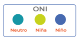
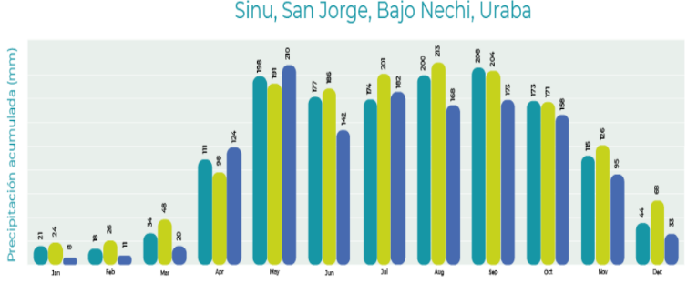
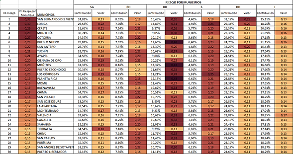
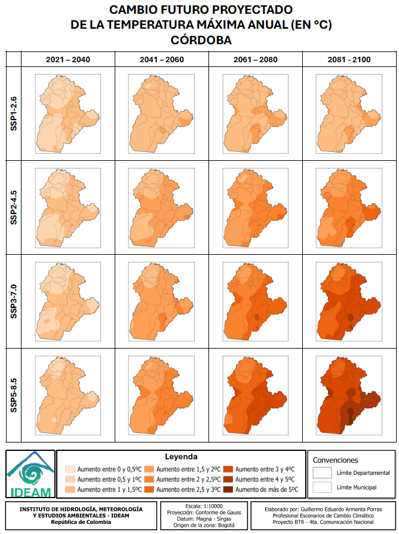

3. EL CLIMA EN EL DEPARTAMENTO
3.1. Climatología en general.
De acuerdo con el análisis departamental realizado por el IDEAM (2014), el departamento de Córdoba presenta dos regiones climáticas diferenciadas en su territorio (ver Figura 6). Es importante destacar la función de las estaciones climatológicas del IDEAM, instaladas en los municipios de Chima, Ciénaga de Oro, Montería, Puerto Escondido y Sahagún para el registro de los datos de temperatura máxima. El registro de temperatura máxima para el departamento de Córdoba durante el periodo 1991–2020 fue de 35.3 °C.
Sinú, San Jorge, Bajo Nechí. (Color azul)
Urabá y Bajo Magdalena. (Color amarillo)

Figura 8 Regiones climáticas en el Departamento de Córdoba, pagina 7. Fuente: FAO-IDEAM (2022).
LINK: https://cambioclimatico.fao.org.co/wp-content/uploads/2023/06/13-CORDOBA_24.02.2023.pdf
3.2. Temperatura promedio por región climática.
En las regiones del Sinú, San Jorge, Bajo Nechí y Urabá, la temperatura máxima se sitúa entre 34,6 °C y 35,1 °C, la temperatura media varía entre 27,4 °C y 28 °C, y la mínima oscila entre 21,1 °C y 21,8 °C.
En la región del Bajo Magdalena, los valores son similares; sin embargo, se observan variaciones más marcadas en la temperatura mínima, que puede descender hasta los 20,7 °C en ciertos periodos.
3.3. Precipitación acumulada.
Las lluvias en las regiones del Bajo Magdalena, es decir, en el Sinú, en el San Jorge, en Bajo Nechí y el Urabá tienen un clima con una sola temporada de lluvias al año. Las precipitaciones más fuertes se presentan entre mayo y octubre, con el pico más alto en agosto para el Bajo Magdalena y entre junio y julio para las otras regiones.
En cambio, la temporada seca ocurre en los primeros meses del año y al final de diciembre, siendo enero y diciembre los meses con menos lluvias. La cuenca del río Sinú recibe menos lluvia en comparación con la región del Bajo Magdalena.
3.4. Variabilidad climática: en relación con los fenómenos de “el niño” y “la niña”, utilizando registros del IDEAM (1975-2020).



Figura 9. Variabilidad climática del “Niño” y “Niña” en las regiones climáticas, páginas 10 y 11. Fuente: FAO (2022).
Link: https://cambioclimatico.fao.org.co/wp-content/uploads/2023/06/13-CORDOBA_24.02.2023.pdf
Estas gráficas de variabilidad climática proyectadas anteriormente, demuestran que el fenómeno “El Niño” afecta principalmente el primer y segundo trimestre del año, reduciendo las lluvias hasta en un 21 %, lo que genera condiciones más secas durante esos meses. Por el contrario,”La Niña” aumenta las lluvias en el segundo y tercer trimestre, justo cuando suelen presentarse las precipitaciones más intensas, con aumentos de más del 15 %.
Esto demuestra que ambos fenómenos climáticos tienen una fuerte influencia en la distribución de las lluvias en estas regiones, y, por tanto, son factores clave para la gestión del riesgo y la planificación ambiental.
3.5. Tercera comunicación de cambio climático del IDEAM.
A continuación, se presentan lo indicadores de la tercera comunicación de cambio climático del departamento de Córdoba y un breve análisis de los escenarios de riesgo proyectados a futuro:
Convenciones:
SA Seguridad Alimentaria |
RH Recurso Hídrico |
BD Biodiversidad |
S Salud |
HH Hábitat Humano |
I Infraestructura |

Figura 10 Indicadores de la tercera comunicación de cambio climático del departamento. FUENTE: Tomado de IDEAM & UNGRD (2025).
Análisis general de los escenarios climáticos de la tercera comunicación.
Los indicadores del IDEAM enseñan unas proyecciones de valores para los componentes o sectores principales para el desarrollo y sostenibilidad de la comunidad, logrando estimar niveles diferenciados de amenaza, sensibilidad, capacidad adaptativa, vulnerabilidad y riesgo según el sector analizado.
Los componentes o sectores analizados fueron: Seguridad Alimentaria (SA), Recurso Hídrico (RH), Biodiversidad (BD), Salud (S), Habitad Humano (HH) e Infraestructura (I).
Los componentes con mayor peso en la estructura del riesgo son la seguridad alimentaria (SA) y la infraestructura (I), ambos con valores altos de amenaza (0,54 y 0,59 respectivamente), lo que refleja una alta exposición ante eventos extremos como sequías, inundaciones y variabilidad en la precipitación.
El modelo evidencia que estos impactos son consistentes con la vulnerabilidad geográfica del departamento, ubicado entre la región Caribe y el valle del Sinú, zonas fuertemente influenciadas por los cambios en los patrones de lluvia y temperatura proyectados por los modelos climáticos globales. El análisis de riesgo climático para el departamento de Córdoba muestra que el componente de biodiversidad (BD) presenta el mayor nivel de riesgo, con un valor de 0,53, clasificado como muy alto, lo que indica una fuerte amenaza para los servicios ecosistémicos. En contraste, los componentes de salud (HH), infraestructura (I) y recurso hídrico (RH) tienen riesgos más bajos.
Vulnerabilidad y sensibilidad
La vulnerabilidad es más crítica en HH y BD, mientras que la capacidad adaptativa es especialmente baja en BD, lo que agrava el riesgo. Estos resultados resaltan la necesidad urgente de fortalecer acciones de adaptación ambiental, especialmente en zonas con alta presión ecológica.
En otras palabras, los resultados de la sensibilidad indican que el hábitat humano (HH) y la biodiversidad (BD) son los sistemas más frágiles frente al cambio climático, con valores de 0,40 y 0,37 respectivamente. Esto significa que los ecosistemas y las poblaciones humanas de Córdoba muestran una alta respuesta negativa a pequeñas variaciones climáticas, debido a la degradación ambiental, deforestación, expansión agropecuaria y urbanización sin control.
En contraste, el recurso hídrico (RH) y la salud (S) presentan niveles de sensibilidad moderados, lo que sugiere que las fuentes de agua y los sistemas de atención sanitaria podrían mantener cierto grado de resiliencia si se implementan medidas preventivas.
Capacidad adaptativa y desigualdades territoriales
El componente de capacidad adaptativa revela una situación preocupante: la mayoría de los sectores claves muestran valores bajos (inferiores a 0,6), salvo el recurso hídrico y la biodiversidad, que alcanzan valores de 1, indicando mayor posibilidad de respuesta institucional y ambiental. Esto refleja una asimetría adaptativa, donde los ecosistemas naturales conservan una capacidad de recuperación más alta que las comunidades humanas o la infraestructura física.
Los municipios con mayores valores de riesgo total, como San Bernardo del Viento, Lorica, Cereté y Montería, se localizan en zonas bajas y costeras del Sinú y San Jorge, las cuales son altamente expuestas a inundaciones y aumentos del nivel del mar, según los escenarios modelados a 2040–2070.

Figura 11 Indicadores de cambio climático por municipio del departamento de Córdoba. Fuente: Tomado de IDEAM (2022).
Conclusiones
Como se observa el departamento de Córdoba clasifica como riesgo muy alto por diversidad, es decir, amenaza que el cambio climático representa para la pérdida de servicios ecosistémicos y riesgo medio en el indicador de salud, lo cual se refiere a un nivel de riesgo moderado que enfrenta la población debido a los impactos del cambio climático en la salud pública. Los cinco municipios del departamento en el riesgo muy alto por los seis indicadores de la tercera comunicación son: San Bernardo del Viento, Lorica, Cereté, Montería, Cotorra.
San Bernardo del Viento, por ejemplo, evidencia un alto riesgo en salud (0.25) y biodiversidad (0.18), lo que resalta la urgencia de implementar acciones de prevención y adaptación. En contraste, municipios como San Carlos, Chinú y Purísima presentan un riesgo medio a bajo, lo que permite orientar estrategias diferenciadas de intervención.
En conjunto, los resultados del IDEAM proyectan que Córdoba experimentará un aumento en la frecuencia e intensidad de los eventos climáticos extremos, especialmente lluvias intensas, inundaciones costeras y estrés hídrico en zonas agrícolas. El componente de biodiversidad (valor 0,53) representa el mayor nivel de riesgo, seguido del hábitat humano y la infraestructura, lo que implica una amenaza combinada sobre los ecosistemas y la calidad de vida de la población.
La vulnerabilidad estructural, sumada a la baja capacidad de adaptación en sectores rurales, advierte sobre la necesidad urgente de fortalecer la planificación ambiental, la gestión del riesgo y las estrategias de adaptación local, priorizando municipios del litoral y cuenca media del Sinú, donde la presión ecológica y el cambio climático convergen con mayor intensidad.
3.6. Cuarta comunicación de cambio climático
En su reciente actualización, el IDEAM hace referencia al documento Escenarios de Cambio Climático en Colombia (2025), basándose en las bases físicas del Sexto Informe de Evaluación (en adelante, AR6); este hito fue elaborado el 2021 por un Grupo Intergubernamental de Expertos sobre el Cambio Climático (en adelante, IPCC). Este informe presenta los experimentos y las modelaciones generadas en la sexta fase del proyecto de intercomparación de modelos acoplados para los escenarios de cambio climático del territorio nacional (en adelante, CMIP6). El proyecto incluye simulaciones a largo plazo del clima en el siglo XX y proyecciones para el siglo XXI, así como algunas para el siglo XXII desde nuevos escenarios llamados trayectorias socioeconómicas compartidas (en adelante, SSP).
En la actualidad, el proyecto CMIP6 lo integran 88 grupos internacionales de modelación, los cuales utilizan modelos acoplados océano-atmósfera (AOGCM), y algunos usan los Earth System Models; estos últimos, además de la atmósfera y el océano, incluyen en sus simulaciones la vegetación y el ciclo de carbono interactivo (IPCC, 2021). De tal modo, los modelos son la única herramienta disponible actual para hacer un análisis climático futuro, y solo algunas instituciones como universidades, centros meteorológicos y de investigación en clima logran tener la capacidades tecnológicas, físicas, investigativas y de personal para desarrollar o correr este tipo de modelos.
Es importante recordar que un escenario de cambio climático es una descripción coherente,
consistente y convincente de un posible estado futuro del clima.
Por lo tanto, los escenarios no deben asumirse como pronósticos o predicciones, sino como una imagen alternativa de cómo el futuro puede mostrarse desde determinadas condiciones en un tiempo dado (Fundación Biodiversidad et al., 2013). Por lo general, se utiliza un conjunto de ellos con el fin de mostrar, de la mejor manera, el rango de incertidumbre en las proyecciones climáticas ante diferentes combinaciones de condiciones económicas, medioambientales, de crecimiento poblacional, políticas, entre otras (Instituto de Hidrología, Meteorología y Estudios Ambientales, 2015).
En términos generales, los expertos del IPCC establecen cinco escenarios posibles (SSP), y son los siguientes:
SSP1 (“sustentabilidad”). Este escenario tiene los siguientes supuestos: bajo crecimiento de la población, alto crecimiento económico, altos niveles de educación, gobernabilidad, una sociedad globalizada, cooperación internacional, desarrollo tecnológico y conciencia ambiental. Teniendo en cuento lo anterior, este escenario representa bajos niveles de desafíos de mitigación y adaptación.
SSP3 (“fragmentación”). En este escenario se asumen: alto crecimiento poblacional y bajo desarrollo económico, niveles inferiores de educación y una sociedad regionalizada y con poca conciencia ambiental, lo cual representa un nivel alto de desafíos para la adaptación y la mitigación.
SSP4 (“desigualdad”). Desde este escenario, la tecnología avanza en los países desarrollados, pero no toda la población logra beneficiarse de ella; esto representa un nivel alto para la adaptación.
SSP5. Este escenario asume que aún se tiene una muy alta dependencia de los combustibles fósiles y un bajo crecimiento en la población, así como un elevado crecimiento económico y un alto desarrollo humano, por lo que representa un nivel alto de desafío para la mitigación.
SSP2. Este es un escenario intermedio, en el cual los supuestos están entre los que corresponden a los SSP1 y SSP3.

Figura 12 ESCENARIOS DE CAMBIO CLIMATICO PROYECTADOS POR AR 6. FUENTE: Escoto Castillo et al . (2017)
Link:https://drive.google.com/file/d/1QOJ5VKz6-xRtQN1GHx6x03Izj7V965cq/view?usp=drive_link
Con base en las definiciones anteriores, en las siguientes secciones se exponen las proyecciones climáticas futuras de precipitación, temperaturas media, máxima y mínima, humedad relativa, velocidad del viento y radiación para el siglo XXI, las cuales corresponden a los escenarios de cambio climático que se deben incorporar en la Cuarta Comunicación Nacional de Colombia.
Análisis general de los escenarios climáticos SSP
Para el departamento de Córdoba, estos escenarios permiten anticipar cómo las decisiones globales en materia de energía, economía y gobernanza podrían modificar las condiciones de temperatura y precipitación hacia el año 2100.
Según los mapas de la ECC4CN, las proyecciones para Córdoba muestran reducciones en la precipitación anual entre –2,6 % (SSP1) y –8,5 % (SSP5), y un aumento sostenido de las temperaturas máximas y mínimas, especialmente hacia finales del siglo. Estas variaciones implican alteraciones significativas en el balance hídrico, la productividad agrícola y la estabilidad de los ecosistemas del Caribe interior colombiano.
Referente al comportamiento de la precipitación: Los resultados del IDEAM indican que bajo escenarios de sustentabilidad (SSP1), Córdoba experimentaría una leve disminución de la precipitación (–2,6 %), lo que sugiere un futuro relativamente estable si se mantienen políticas de mitigación y manejo ambiental sostenido. Sin embargo, bajo SSP2 y SSP3, la reducción oscila entre –4,5 % y –7 %, evidenciando un deterioro progresivo de las lluvias y una mayor probabilidad de déficits hídricos estacionales en cuencas como el Sinú y el San Jorge. El escenario más crítico, SSP5 (–8,5 %), proyecta un contexto de aridez extendida, con afectación directa sobre la recarga de acuíferos, disponibilidad de agua para riego y regulación hídrica de humedales y ciénagas. En síntesis, la tendencia general apunta a un descenso gradual en las lluvias anuales, acompañado de un aumento en la irregularidad interanual y mayor riesgo de sequías prolongadas.
Referente a las tendencias de temperatura: Las proyecciones térmicas revelan un aumento sostenido de la temperatura media anual en Córdoba, tanto en los valores máximos como mínimos. El incremento de la temperatura máxima se proyecta entre +1,5 °C y +3 °C hacia mediados de siglo, y podría alcanzar +4 °C o más bajo los escenarios SSP3 y SSP5 para finales del siglo XXI. Paralelamente, la temperatura mínima aumenta en rangos similares, lo cual reduce la amplitud térmica diaria y modifica los ciclos de evapotranspiración. Este calentamiento homogéneo podría provocar estrés térmico en cultivos tropicales, reducción de rendimientos agrícolas y mayor demanda energética por refrigeración en centros urbanos como Montería y Lorica. A nivel ecosistémico, se espera un desplazamiento altitudinal de especies, pérdida de hábitats húmedos y afectación a la biodiversidad ribereña del Sinú.

Figura 13 TENDENCIAS Y PROYECCIONES PARA LOS ESCENARIOS DE PRECIPITACION AL DEPARTAMENTO DE CORDOBA. FUENTE: IDEAM (2025)
LINK: https://drive.google.com/file/d/1F0r1mJKU387P8f3dV2EZAcpNrfoGNYoS/view?usp=drive_link

Figura 14 TENDENCIAS Y PROYECCIONES PARA LOS ESCENARIOS DE TEMPERATURAS MAXIMAS ANUALES EN EL DEPARTAMENTO DE CORDOBA. FUENTE: IDEAM (2025)
LINK: https://drive.google.com/file/d/15QFMh3ZtMu5xEWg17UpTwH7_JftKZ0TV/view?usp=drive_link
Conclusiones e interpretaciones finales.
En resumen, los escenarios climáticos del IDEAM advierten que Córdoba será más cálido y más seco en todos los escenarios futuros, con mayor severidad bajo trayectorias de desarrollo insostenible (SSP3 y SSP5). La reducción de lluvias y el incremento térmico se traducen en mayor vulnerabilidad hídrica, afectando la agricultura, la ganadería y los ecosistemas acuáticos que sustentan la economía y el bienestar regional. Los municipios del medio y bajo Sinú —como Cereté, Lorica, San Bernardo del Viento y Purísima— enfrentarán un riesgo combinado de sequías, pérdida de productividad y deterioro de la calidad del agua, mientras que los sectores costeros podrían sufrir intrusión salina y degradación de humedales costeros.
En términos de gestión del riesgo y adaptación, los escenarios SSP enfatizan la necesidad de fortalecer políticas de ordenamiento territorial climático, conservación de fuentes hídricas, transición energética y agricultura resiliente. Córdoba deberá priorizar estrategias basadas en gestión integral del agua, restauración de cuencas, monitoreo climático local y educación ambiental, con el fin de reducir su exposición ante los impactos del cambio climático. En los escenarios más sostenibles (SSP1–SSP2), la región aún puede estabilizar su balance hídrico, pero bajo trayectorias de fragmentación o dependencia fósil (SSP3–SSP5), el riesgo de degradación ambiental y pérdida socioeconómica será alto y creciente hacia finales del siglo.